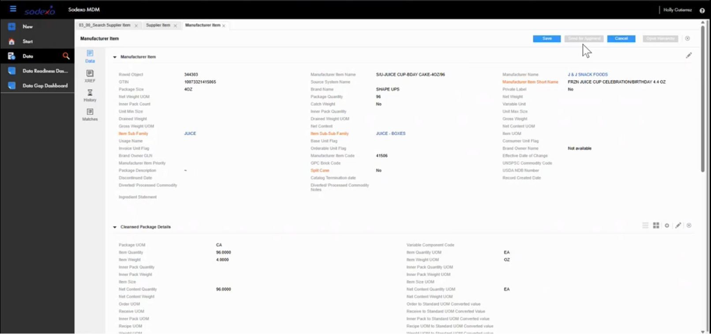
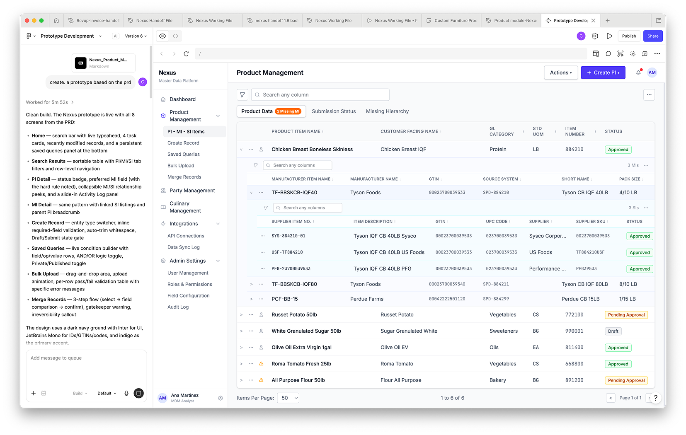
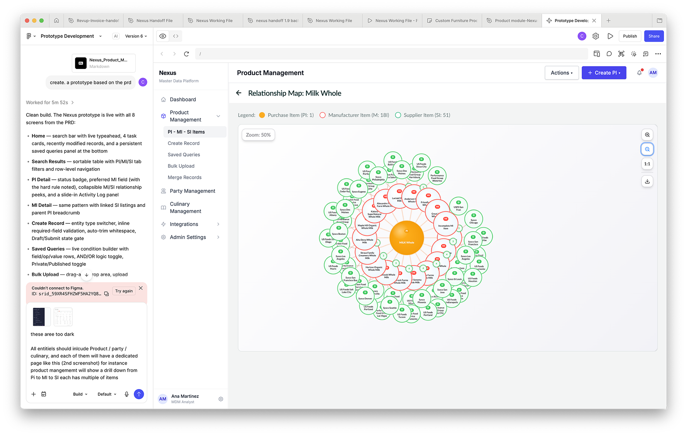
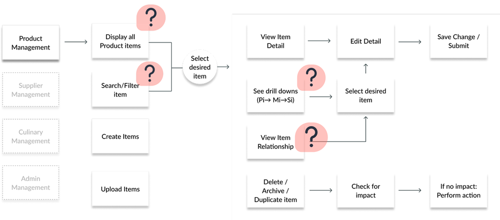
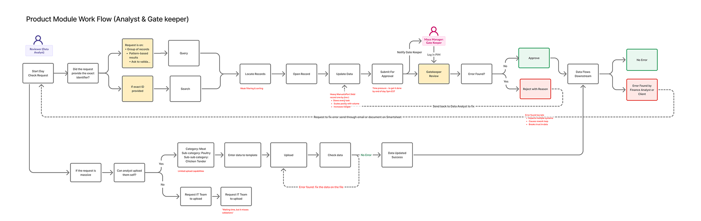
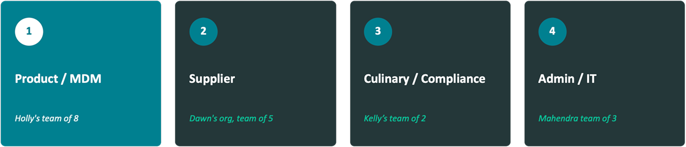
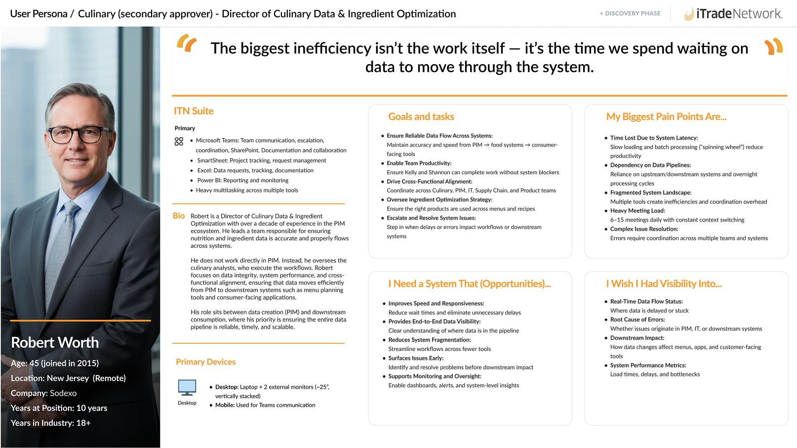
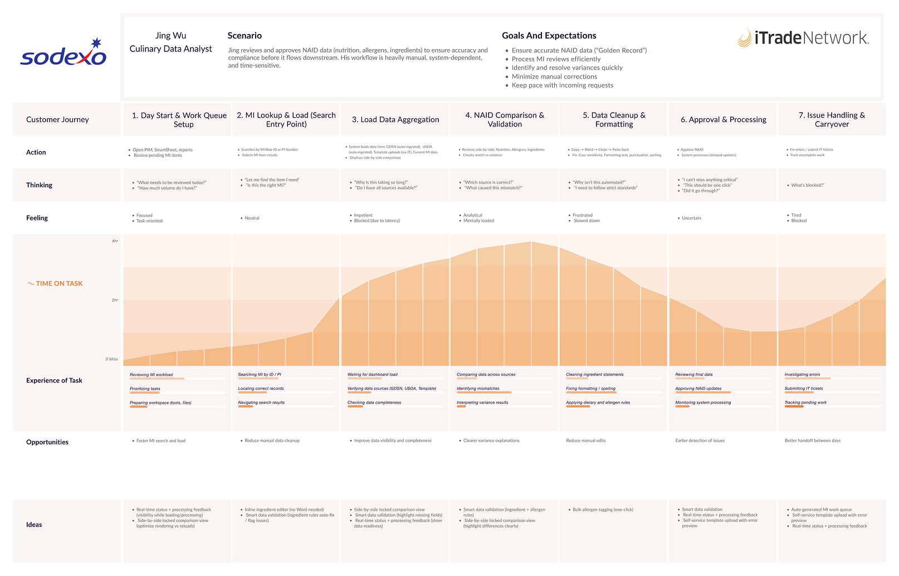
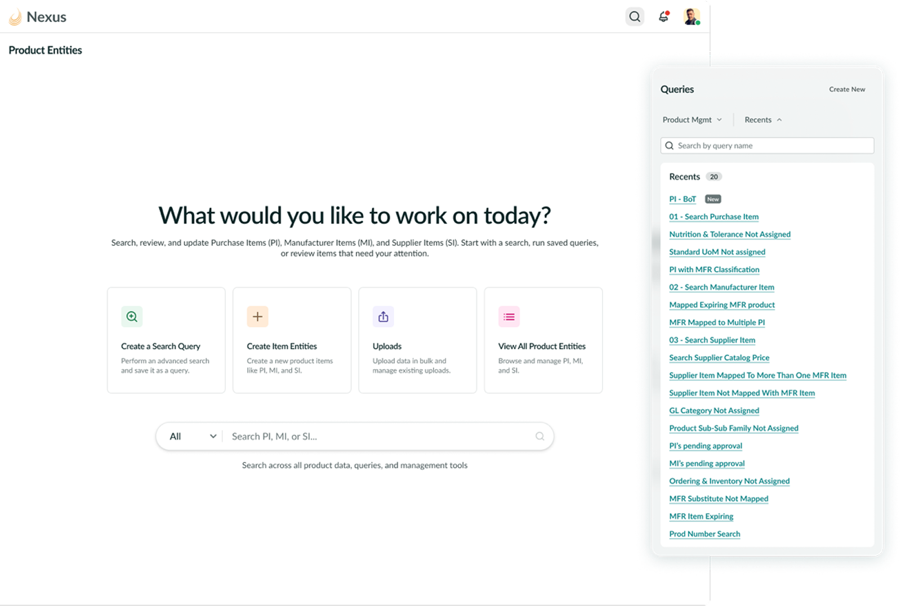

Steering an Accelerated Pitch Back to What Users Actually Needed
How research-led design redirected a misaligned prototype and delivered 3 production-ready modules for Sodexo's single source of truth platform.
About Nexus
Nexus is Sodexo's Master Data Platform — a single source of truth for product, supplier, culinary, and compliance data across the entire supply chain. The platform consolidates fragmented legacy systems used by four internal teams: Product/MDM, Supplier Management, Culinary/Compliance, and Admin/IT.
Before Nexus, these teams operated across disconnected tools — SharePoint, Smartsheet, Excel, and multiple internal databases — with no unified view of item relationships, data health, or workflow status. Errors upstream cascaded silently into downstream invoicing and compliance failures.

The legacy Sodexo MDM — fragmented systems, confusing UI interactions, and difficult onboarding were the core problems to solve.
The Problem — What the Pitch Missed
The initial PM-synthesized prototype had been greenlit and built quickly — but it was solving the wrong problem. It prioritized displaying comprehensive data tables over fast, targeted access. When real users got in front of it, the gaps were immediate.

The greenlit prototype — PM synthesized requirements, built fast, and moved forward. Real design work surfaced what it missed.

The prototype's relationship map view — comprehensive but not what analysts actually needed day-to-day.

The pitch assumed users wanted to browse the full data table. Users actually needed fast search and direct navigation to a specific record to troubleshoot it.
How might we give users fast search and direct navigation to a specific item's detail view — instead of forcing them to browse a full data table?
How might we surface PI → MI → SI data relationships inline without requiring analysts to navigate between disconnected screens?
How might we design bulk upload with inline validation so data stewards can catch errors before they cascade into downstream invoicing failures?
How might we support four distinct teams with overlapping but conflicting workflows inside a single unified platform?
"Sophistication isn't more features — it's bringing users back to what they actually need."
Discovery — What Research Revealed
I ran stakeholder interviews across all four teams and mapped their actual day-to-day workflows. Analysts didn't start their day browsing data tables. They started with a specific request — a supplier item number, a product ID, a flagged error from finance — and needed to get directly to that record, troubleshoot it, and move on.

Product Module workflow mapped end-to-end: from Day Start through Query, Locate Records, Gatekeeper Review, and Downstream Data Flow — exposing exactly where the system broke down.
I'm moving a lot of data, under deadlines, with dependencies, and the system doesn't make it easy to know where to go.
— Joe, Supplier Entities Data StewardThe biggest inefficiency isn't the work itself — it's the time we spend waiting on data to move through the system.
— Robert Worth, Director of Culinary Data & Ingredient OptimizationPersonas — Four Teams, One Shared System

Four teams, one shared platform — each with radically different workflows, failure modes, and mental models.

Persona deep-dives grounded design decisions in real user workflows rather than assumed requirements.

Journey mapping revealed where users experienced the highest friction — particularly during data aggregation and NAID comparison steps.
- Heavy manual effort — one record at a time in legacy system
- No consolidated view of PI → MI → SI relationship chain
- Analysts export to Excel for basic sorting and filtering
- Context lost when switching between tools mid-task
- Bulk upload tool fails unpredictably over ~50 records
- Validation errors don't identify which specific line is wrong
- Duplicate customer numbers cause downstream invoice failures
- No consolidated validation view before nightly jobs run
- Reliance on upstream systems creates overnight processing delays
- 6–13 meetings daily from constant cross-tool context switching
- Errors require coordination across multiple teams and systems
- No real-time visibility into data health or approval status
- Manual troubleshooting when uploads partially succeed
- No consolidated validation view before nightly jobs
- Configuration issues only surface after downstream failures
- No audit trail for changes across programs and records
Design Process
The process ran in tight cycles — research directly informing wireframes, wireframes validated through quick demos, findings reshaping the next sprint. Everything moved at product pace.
Mapped real daily workflows — not requirements doc assumptions. Surfaced the gap between what the pitch built and what users actually needed.
Built 18 persona and journey artifacts covering all roles. Product Module workflow mapped from Day Start through Gatekeeper Review and downstream data flow.
Pivoted the home to a task-intent prompt: "What would you like to work on today?" Saved queries gave power users instant access to their most-used filters.
Rapid demos with analysts from each team confirmed the pivot — users navigated to their target record in seconds vs. minutes in the legacy system.
What We Delivered
Three production-ready modules designed end-to-end — from user flows and wireframes through high-fidelity specs and design system components.

The redesigned Nexus home: search-first, task-intent prompt, 4 quick-action cards, and a persistent saved queries panel — giving power users instant access without browsing.
Replaced the data-table-first entry point with a task-intent prompt. Live typeahead search, 4 quick-action cards, recently modified records, and a persistent saved queries panel.
Status badge, preferred MI field with hard rule noted, collapsible MI/SI relationship peeks, and a slide-in Activity Log panel — all in one view. No more screen switching to understand a record's full relationship chain.
Drag-and-drop upload with real-time row-level validation errors, specific error messaging per line, and a pre-submission review state before nightly jobs — preventing downstream invoice failures at the source.
Field/op/value rows, AND/OR logic toggle, Private/Published toggle — giving analysts a reusable, shareable filter system that replaced the Excel exports they'd been relying on.
Auto-trim whitespace, live condition builder, Draft/Submit state gate — preventing upstream data errors before they reached the gatekeeper review stage.
Outcomes
Product, Supplier, and Culinary modules delivered in 4 months — all production-ready with full specs and design system components.
Persona and journey map artifacts across 4 teams, grounding every design decision in real user workflows.
Users reached their target record in seconds via typeahead search vs. minutes of table browsing in the legacy system.
Human judgment correcting the model's blind spots.
Interested in working together?
I'm open to senior product design roles in B2B SaaS, enterprise tools, and complex data-heavy domains.